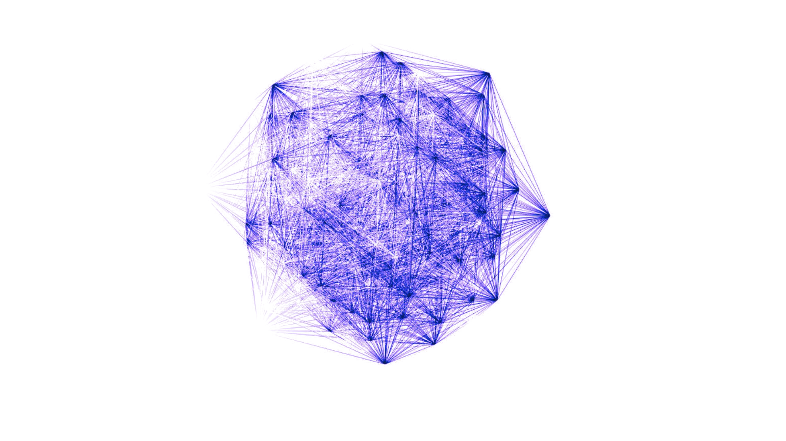

Text Detection Models
Using the HC3 Dataset and preprocessing/feature engineering techniques, we find optimal hyperparameters & Dataset structure. Anomaly detection is used to filter out noisy data & improve the Dataset quality.


We present a novel Dynamic Architecture for producing & commoditizing Intelligence for solving real-world problems via Ruthless Darwinian Competitions, utilizing & incentivizing the global world's Compute towards the network's goals.
Our focus is on mining & training AI Text Detection Models across hyperparameter search spaces using the famous HC3 Dataset & NLP methods/models across different Model families(Both classical ML & NLP Models). We utilize embeddings & classical preprocessing Techniques to improve the Dataset quality, performance of the models and evaluate them with statistical techniques.
We show that the Bittensor Architecture generalizes towards any problem including training AI Text Detection Models & Algorithms. The network is self-organizing & self-improving, only rewarding the best performing models & algorithms. We also mention why this could potentially change the way business is done in the world & the future of SOTA AI Models.
Note: this network is evolving & improving over time. Many changes are expected to be made in the future so it would be wise to check the documentation for the latest updates.

Using the HC3 Dataset and preprocessing/feature engineering techniques, we find optimal hyperparameters & Dataset structure. Anomaly detection is used to filter out noisy data & improve the Dataset quality.
We research how the network issues TAO as the Currency for rewarding participants. Extensive research & experiments show that this method works like a Reinforcement Learning Algorithm and the Subnet Operator(Business Owner) needs to fine tune those parameters to find the best Workers(Miners).


The ever growing AI landscape is a complex web of dependencies. Open Source & open weigths are essential for the network to function properly. Any adversary that collects a monopoly on Models & Intelligence could potentially posses an imbalanced and unfair advantage over the future direction of the world. Bittensor tries to tackle this problem by allowing independent people from across the world to participate in the network & compete for producing the best performing models & algorithms or even hosting them while also rewarding them for their contributions.


@mastersthesis{mokos2026miningintelligence,
author = {Mokos, Panagiotis},
title = {Mining Intelligence: Towards Decentralized, Permissionless AI},
school = {University of Macedonia},
type = {B.Sc. Thesis},
year = {2026},
note = {Supervised by Eftychios Protopapadakis and Emmanouil Stiakakis}
}